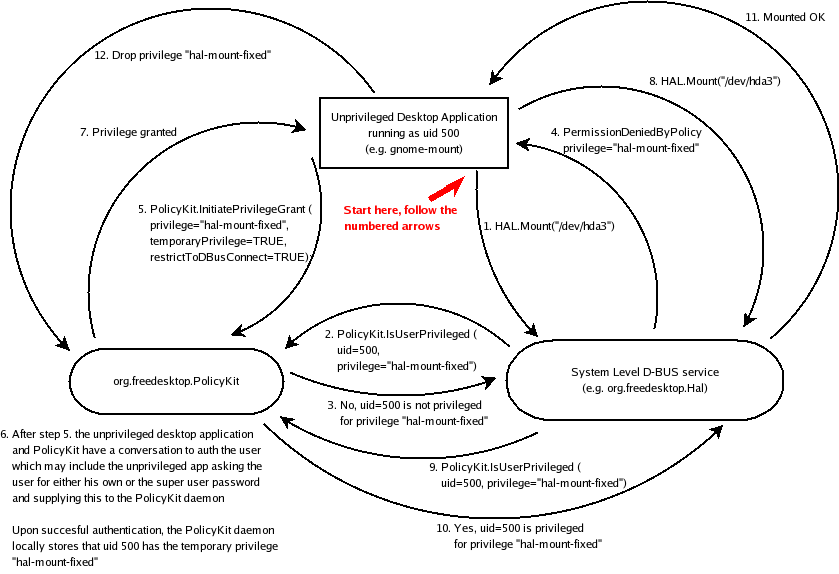

PolicyKit is a system for enabling unprivileged desktop applications to invoke privileged methods on system-wide components in a controlled manner.
One major concept of the PolicyKit system is the notion of privileges; a PolicyKit privilege (referred to simply as privilege in the following) is something that a given user may or may not possess. The thinking behind PolicyKit is that privileged system level components offer functionality to unprivileged desktop applications as D-BUS method calls through the system message bus. In order to have a flexible security policy defining the set of users that are allowed to invoke a method, the system level component defines a set of privileges.
The PolicyKit system is basically client/server and is implemented as the system-wide org.freedesktop.PolicyKit D-BUS service. This D-BUS service serves two purposes
System-level components may used D-BUS methods on this service to determine if a given caller of their methods are privileged.
Desktop level applications may initiate a dialogue with this service to (temporarily) obtain a privilege through authorization.
In addition, the PolicyKit system includes client side libraries and command-line utilities wrapping the D-BUS API of the org.freedesktop.PolicyKit service.
As an example, HAL exports the method Mount on the org.freedesktop.Hal.Device.Volume interface for each hal device object of capability volume. HAL defines a number of privileges for mounting including hal-storage-fixed-mount and hal-storage-removable-mount. Depending on the whether the volume stems from a fixed hard disk or a hotpluggable/removable drive, HAL requires the calling user to possess either the hal-storage-fixed-mount or hal-storage-removable-mount privilege in order to carry out the Mount method.
Upon a user invoking the Mount method, HAL simply asks the org.freedesktop.PolicyKit D-BUS service if the calling user posses this privilege and if this is not the case the Mount method throws the org.freedesktop.Hal.Device.PermissionDeniedByPolicy exception. Notably, this exception will tell the caller what privilege the calling user needs to possess, e.g. either hal-storage-fixed-mount or hal-storage-removable-mount.
Should the Mount method fail with the exception PermissionDeniedByPolicy the caller now knows what privilege is required. The caller can now initiate a dialogue with the PolicyKit service to obtain this privilege. This conversation is basically equivalent to a PAM authentication; in fact the PolicyKit service uses PAM under the hood and wraps it in D-BUS calls. For details (like what user to authenticate as) see XXX. When the caller obtains the privilege (after successful authentication) he can now invoke Mount and after this succeeds he may tell the PolicyKit service to release the privilege for the user as it is no longer needed. Should the process crash while holding a privilege, the PolicyKit service will be notifed and the privilege will automatically be revoked.
Hence, PolicyKit has the notion of both permament and temporary privileges. The latter may even be restricted such that only callers from the D-BUS connection (remember, D-BUS connections has unique names) obtaining the privilege may use the obtained privilege.
In addition, privileges may be restricted to certain resources; this is discussed in more detail in XXX.

The whole example is outlined in the diagram above.
PolicyKit allows granting privileges only on certain resources. For example, for HAL, it is possible to grant the privilege hal-storage-fixed-mount to the user with uid 500 but only for the HAL device object representing e.g. the /dev/hda3 partition.
Resource identifers are prefixed with a name identifying what service they belong to. The following resource identifiers are defined
hal:// HAL Unique Device Identifiers also known as HAL UID's. Example: hal:///org/freedesktop/Hal/devices/volume_uuid_1a28b356_9955_44f9_b268_6ed6639978f5
Applications, such as HAL, installs privilege descriptors using the polkit-policy-descriptor-install commandline utility. The descriptor contains the following information
Criteria for determining if a given user possess the privilege on a given resource.
What other privileges a given user must also possess.
Information on whether the user can obtain the privilege, and if he can, whether only temporarily or permanently.
Whether a user with the privilege may permanently grant it to other users.
A developer of a system-wide application wanting to define a privilege must create a privilege descriptor. This is a a simple .ini-like config file. Here is what the skeleton looks like:
[Policy]
RequiredPrivileges=
Allow=
Deny=
CanObtain=
CanGrant=
ObtainRequireRoot=
ObtainPAMService=
|
This is a list of privileges the user must possess in order to possess the given privilege. If the user doesn't possess all of these privileges he is not considered to possess the given privilege. The list may be empty.
Both Allow and Deny contains lists describing what users are allowed respectively denied the privilege. The elements of in each list are of the form type:value[:resource]. where the last part, resource, may be omitted. The following types are supported:
uid: Unix user identifer; either a positive integer or Unix username. Special values include __all__ (for denoting all users) and __none__ (for denoting no users).
gid: Unix group identifier, either a positive integer or Unix groupname. Special values include __all__ (for denoting all groups) and __none__ (for denoting no groups).
To determine if a given user is allowed for a given privilege (for a given resource), first the RequiredPrivileges list is consulted as described above. If the user possess all of the listed privileges, the Allow list is now consulted. For each element we it is tested whether the user matches. If there are no elements for which the user is matches, the user is said not to possess the given privilege (for the given resource).
If there is a match in the Allow list, the Deny list is now consulted. If the user matches any of the elements we know he doesn't possess the given privilege. If no elements match we can conclude that the user indeed possesses the given privilege (for the given resource).
This logic is best described by a few examples
Allow="uid:davidz uid:501:hal:///deviceFoo gid:admins uid:502"
Deny="gid:dooders uid:502:hal:///deviceBar"
User davidz possess this privilege. All members of the dooders group is denied this privilege. User 501 is allowed this privilege but only on the hal:///deviceFoo resource. All users in the admin group posseses the privilege. User 502 is allowed this privilege but not on the hal:///deviceBar resource.
Allow="uid:__all__"
Deny="gid:normalstaff"
All users expect those in the normalstaff group posseses this privilege.
This property denotes whether an user can obtain the privilege by authentication. It can assume the values True (the user can obtain the privilege permanently), Temporary (the user can only obtain the privilege temporarily) and False (the user can never obtain the privilege through authentication).
The authentication required are specified in the ObtainRequireRoot and ObtainPAMService properties.
This property (it can assume the values True and False) describes whether an user with the given privilege can grant it to other users, e.g. modify the Allow and Deny properties.
The property CanObtain needs to have the value True if this property assumes the value True.
If the property CanObtain assumes the value True or Temporary it means the user can authenticate to gain a privilege.
The ObtainRequireRoot property specifies whether authentication requires the super user password (True) or the users own password (False). In addition, it can be specified what PAM service (for example pam_rps) is to be used for authentication through the property ObtainPAMService.